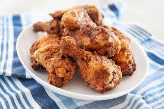

Fried Chicken

Description
The crispiest, spiciest, homemade fried chicken.
Ingredients
- 1 quart vegetable oil for frying
- 4 and 1/3 cups all-purpose flour, divided
- 1 and 1/2 tablespoons garlic salt
- 1 tablespoon ground black pepper
- 1 tablesppon paprika
- 1/2 teaspoon poultry seasoning
- 1 and 1/2 cups beer, or as needed
- 2 egg yolks, beaten
- 1 teaspoon salt
- 1/4 teaspoon ground black pepper
- 1 (3 pound) whole chicken, cut into pieces
Steps
- Heat oil in a deep-fryer to 350 degrees F (175 degrees C)
- Mix together 3 cups flour, garlic salt, 1 tablespoon pepper, paprika, and poultry seasoning in a medium bowl
- Stir together 1 1/2 cups beer, remaining 1 1/3 cups flour, egg yolks, salt, and 1/4 teaspoon pepper in a separate bowl; thin mixture with more beer if batter is too thick
- Moisten chicken pieces with a bit of water, then dip in the dry mixture. Shake off excess and dip in the wet mixture, then dip in the dry mixture once more
- Fry chicken pieces in hot oil until well-browned and internal temperature reaches 165 degrees F (74 degrees C), 15 to 18 minutes
- Remove chicken pieces and drain on paper towels before serving